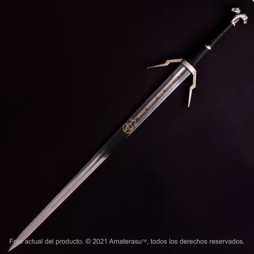
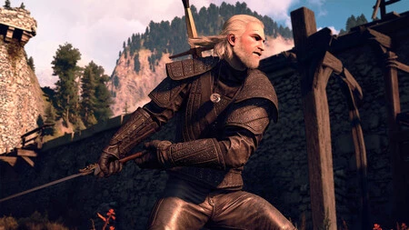
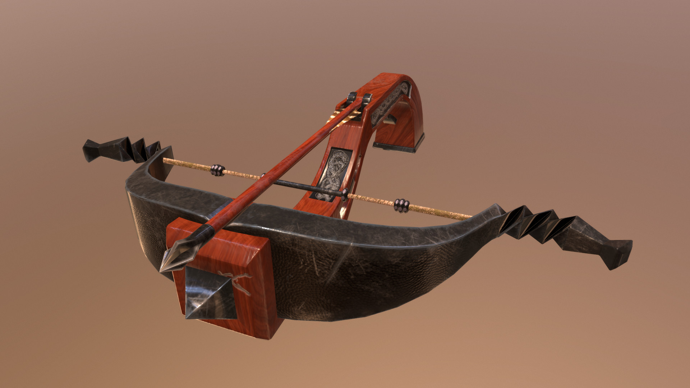
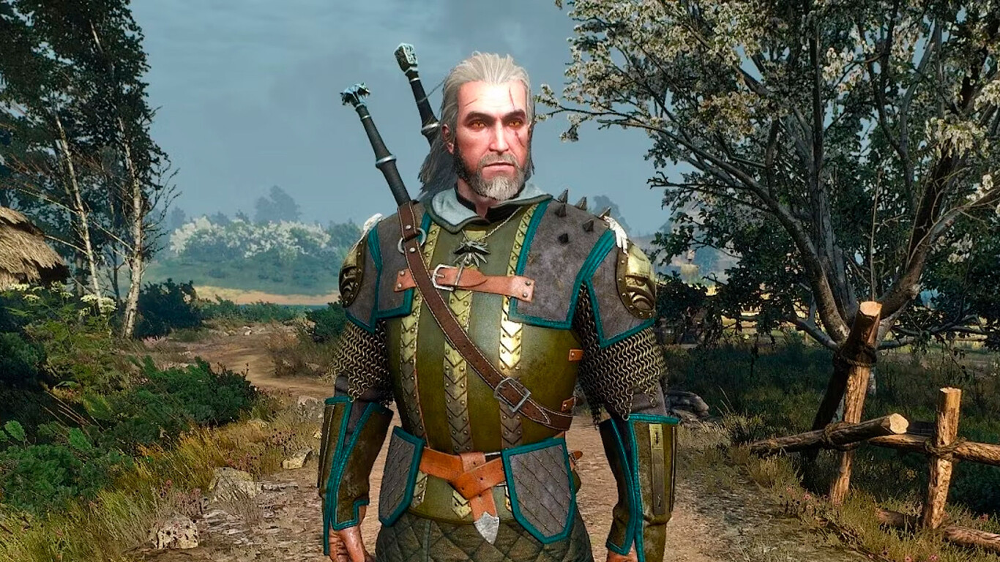
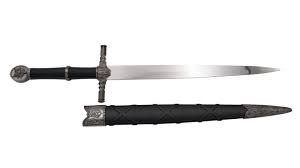

| Nombre | Tipo | Daño/Defensa | Descripción | Imagen |
|---|---|---|---|---|
| Espada de Plata | Arma | 65 | Una espada de plata forjada por un herrero en Vizima. |  |
| Armadura del Lobo | Armadura | 50 | Armadura resistente usada por los brujos de la escuela del Lobo. |  |
| Ballesta Enana | Arma | 40 | Una ballesta compacta fabricada por enanos, ideal para cazar monstruos. |  |
| Armadura del Gryphon | Armadura | 55 | Armadura ornamentada con detalles de gryphon utilizada por algunos brujos. |  |
| Dagas Gemelas | Arma | 30 | Dagas rápidas y afiladas, perfectas para ataques rápidos y precisos. |  |